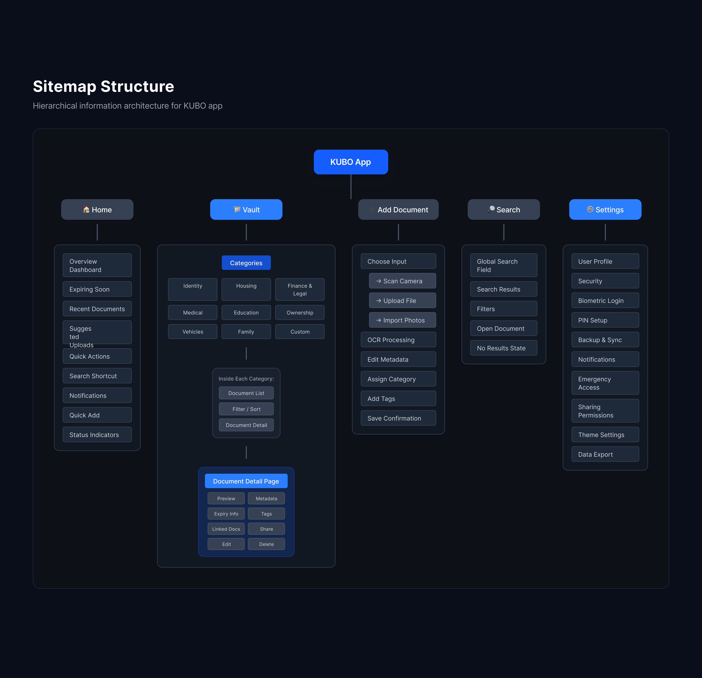

KUBO
A secure digital identity vault for personal documents

A secure digital identity vault for personal documents
KUBO is a conceptual mobile app designed as a secure digital identity vault for storing and organising important personal documents. The product focuses on helping adults manage passports, contracts, receipts, warranties, medical records, and other life documents in one safe, accessible space.
The project explores how thoughtful UX design can reduce the stress and complexity associated with personal administration. Through a calm visual language, structured information architecture, and accessible interface design, KUBO aims to make document management simple, secure, and easy to navigate.
Managing important documents is often fragmented. People commonly store files across email attachments, phone galleries, cloud folders, and physical storage, which creates confusion and anxiety when documents are needed quickly.
The main challenge was designing an interface that could handle complex information while still feeling clear, calm, and trustworthy. The product needed to balance security, usability, and accessibility while avoiding the cold or overly technical feel common in administrative tools.
The project began with exploratory research into how adults manage important documents today. Instead of formal interviews, insights were gathered through behavioural research, UX reports, and patterns observed in existing document and storage platforms.
From these insights, I defined key user tasks such as adding documents, retrieving files quickly, and managing expiry reminders. I then mapped the product structure through a sitemap and task flows to understand the core navigation logic.
Once the information architecture was established, I designed low-fidelity layouts before developing high-fidelity screens in both light and dark modes. The interface was built around a card-based system and a refined colour palette designed to support readability and accessibility.

Hierarchical information architecture showing the app's core sections and navigation flow

Task flows for key user interactions: Add New Document, Retrieve Document, and Expiry Reminder

Scroll to explore the home screen ↕
Several design decisions shaped the final concept.
The structure allows users to quickly find documents through either categories in the Vault or global search.
The interface uses a calm colour palette of royal blue, soft sage, and neutral tones to communicate trust and organisation while avoiding overly clinical aesthetics.
Document categories and card layouts were designed with generous spacing and simple hierarchy to reduce cognitive load when scanning information.
Accessibility considerations such as colour contrast and readable typography were incorporated to ensure the interface remains legible and comfortable across both light and dark modes.
The final concept presents a clean and approachable digital identity vault that transforms document management into a calm, structured experience. The interface balances functionality and visual clarity while demonstrating a scalable design system.
KUBO showcases how UX design can turn a stressful, administrative task into something intuitive and even reassuring. The project also allowed exploration of navigation patterns, accessibility-focused colour systems, and a modular component structure suitable for future product development.